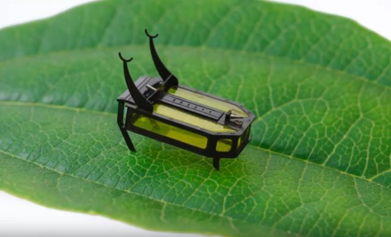

Date : 21 août 2020

Des robots-insectes ? Les insectes disparaissent tels que les abeilles et donc ceci influence notre écosystème mais ces dernier pourront être remplacer par des RoboBees, Ils pourront effectuer les tâches de nos abeilles actuelles (sauf le miel) mais ils pourront polliniser des fleurs. Les Robobees sont équipées de caméra et de capteur qui pourrait permettre de reconnaître et identifier des fleurs qu'ils pourront polliniser, Ils ont trouvé la solution pour transporter le pollen qui est très léger, très volatile. Ils ont bien sûr eux aussi créé leur propre robot abeille, sur lequel ils ont fixé 3 millions de poils de cheval, pour ressembler au corps velu d'une abeille. ils ont enduit ces poils d'un gel ionique, pour capturer le pollen et ensuite le déposer sur un autre pistil de plus ce gel pourra changer de couleur en fonction de son environnement et donc lui permettra de se camoufler pour éviter d’être attaqués par d'autres insectes.

RoBlatte / RoBeetle : RoBeetle sont un micro robot qui a pour but de ressembler a une blatte et a des caractéristique plutôt exceptionnel pour les micros-robots actuellement développer, d'une longueur de 2,25 centimètres, cette petite machine pèse seulement 0,32 grammes. Elles disposent de 8 degrés de liberté actionnés indépendamment.
Grâce au phénomène de contraction et de détente d’un fil composé d’alliage de nickel et de titane et recouvert de poudre de platine, en contact avec le méthanol (un carburant liquide à forte densité énergétique). Ce dernier matériau entraîne une réaction de combustion catalytique qui réchauffe le fil, et permet au RoBlatte d’avancer. De plus ils pourraient porter 10 fois son poids pour le moment.

Source :
https://www.science-et-vie.com/archives/sur-terre-sous-l-eau-dans-les-airs-demain-ils-seront-partout-les-micro-robots-26203#dossier-48426
https://www.journaldugeek.com/2020/08/21/micro-robot-scarabee-alcool/
https://www.rtl.fr/actu/sciences-tech/bientot-des-robots-pollinisateurs-pour-remplacer-les-abeilles-7792653435
https://www.rtl.fr/actu/sciences-tech/bientot-des-robots-pollinisateurs-pour-remplacer-les-abeilles-7792653435